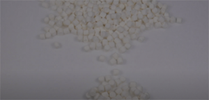

: 길뭉치 스튜디오 채널의 영상을 처음 접하는 사람 혹은 우리의 영상에 흥미를 가지게 된 사람을 위해
우리 팀 영상의 무드와 컨셉이 잘 드러나며, 앞으로 어떤 방향성을 가지고 영상을 업로드 할 것인지에 대한 안내,
우리의 비전에 공감 혹은 지지할 수 있도록 만드는 첫 영상으로 소개 영상을 업로드 하려 합니다.
(길뭉치 스튜디오가 뭐야? → 이 소개 영상 보면 이해 될거야!)
영상 내용 흐름
: 채널명 의미, 방향성, 업로드할 콘텐츠 소개, 응원 부탁
영상 컨셉
: 아기자기한, 차분한, 다꾸 느낌 (무드 보드 참고)
- 영상 비율 3:4
- 인스타 필터 적극 활용 (반짝 반짝)
스크립트 & 장면 기획
#1 [안녕하세요 길뭉치 스튜디오 입니다.]
: ep1. 길뭉치 스튜디오 (콜라주 기법으로 텍스트, 꾸물꾸물 효과)
- 장면 컨셉 이미지
#2 [길강아지와 뭉치를 더한 길뭉치 스튜디오는]
: 길(Road)강아지 + 뭉치(뭉치다, 털 뭉치, 사고뭉치)-촬영 요함
영상 두 개를 겹쳐서 동시에 재생, 마스킹 테이프 활용해서 메모지 느낌 주기!
#3 [유기견 한 마리 한 마리의 이야기를 알려 편견을 부수고]
: 다시 사랑 받개 유기견들 예쁜 얼굴 2컷 정도 짧게 이어 붙여서- 보정 요함
#4 [가족과 하나로 뭉쳐 행복하게 살 수 있도록 돕는단 의미를 담고 있습니다]
: 예쁜 풍경에서 강아지 인형 안고 빙글 빙글 도는 장면 (인스타 반짝 반짝 필터 활용)-촬영 요함
- 장면 구상
#5 [유기견 관련 사회 이슈와 보호소, 유기견 이야기 그리고 유기견과 함께하는 사람들의 이야기를 영상으로 만들어]
: 아래 장면 같은 배치에 문구는 NEWS NEWS NEWS 차례로 뜨게! 사용되는 영상은 유기견 영상 2개, 마시멜로 영상 1 분할해서
- 장면 구상
#6 [유기견도 좋은 가족이 될 수 있음을 알리고 입양을 돕겠습니다]
: 강아지 뒤통수 사진들 다꾸 느낌 단어(family)
- 장면 구상
#7 [길뭉치의 발자국이 기대된다면?]
: → (구독 버튼 배치)
- 장면 구상
무드 보드
"유기견 보호소에서 안락사가 일어나는 이유" 리메이크 기획 Story
기획 의도
- 유기견 안락사 문제의 본질을 알리기 위해
- 안락사라는 소재로 우리 채널에 많은 사람을 유입하기 위해
- 유기견 안락사 문제에 대한 새로운 관점을 제공하기 위해
주제 및 소재
: 유기견 안락사 문제를 보호소, 펫샵, 일반인, 유기견 예비입양자의 다양한 관점을 담아 풀어냄
독자층
: 2030 사회 이슈에 관심이 많으신 분, 동물권 이슈에 관심이 많으신 분
원 영상 개선점
- 영상 길이가 너무 길다 ->1분 30초로 줄일 것
- 효과음이 너무 크다
- 첫 부분 폰트 바꾸기
- 숫자 올라가는 부분 다시 만들기
- 나레이션 바꾸기
- 비슷한 장면들이 많이 반복되는 느낌
- 장면마다 보정 상태, 색감이 다르다
- 배경음악 넣기
- 지인과의 카톡 장면, 입양 절차 장면이 내용에 이입되지 않음
- 유기견을 마시멜로우로 표현했다는 점을 영상 안에 공지해줄 것
- 로고 넣기
- 같은 장면 재탕 해결
- 마시멜로우 노출도가 너무 높아져서 눈에 안 들어옴
- 마지막 브금이 너무 크고 무드에 안 맞음
- 세련된 효과음으로 바꾸는 게 좋을 듯
- 자막의 맞춤법
스크립트 & 장면 기획
#1 [*반려견을 기르는 것은 누구에게나 쉽지 않습니다.
돌보기 위해 필요한 지식들을 쌓는 것부터 함께 살아나가는 것까지, 어느 하나도 쉬운 게 없죠.]
: 반려견을 키울 때의 하루 일과를 일러스틀로 보여줌
- 장면 컨셉 이미지
#2 [그래서 몇몇 사람들은 자신의 가족을 버리기로 합니다.]
: 마시멜로우 딱밤쳐서 날아가는 장면 + 멍! 혹은 낑낑 효과음 + 마시멜로에 슬픈 표정 이모지 넣기
- 장면 컨셉 이미지
#3 [그리고 이러한 행동들로 인해 유기견은 꾸준히 증가하여 2019년도는 135,791 마리를 기록했죠.]
: 마시멜로우 쏟아지는 (숫자 카운트되는 자막)
#4 [보호소로 구조한 전체 유기견 중 27. 1% 즉 4마리 중 한 마리는 안락사에 처해집니다.
이는 유기견 보호소의 입양률보다 높은데요]
: 마시멜로우 손으로 가져오는 장면 + 안락사 관련 헤드라인 2개
#5 [보호소는 유기견들을 보호하기 위해 만들어진 곳인데 왜 안락사가 일어날까요?]
: 보호와 안락사에 형광펜 표시, 쓰는 모션
- 장면 구상

#6 [보호소의 공간, 인력, 금전은 한정적입니다.]
: 보호소, 돈(혹은 가계부), 사람 그리기
- 장면 구상
#7 [보호소, 돈(혹은 가계부), 사람 그리기]
: 보호소, 돈(혹은 가계부), 사람 그리기/ 뭉치들이 습격
- 장면 구상
#8 [그로 인해 많은 유기견들의 사료나 패드, 시설 운영비 등을 감당하기 어렵다는 금전적인 한계와]
: 보호소 포커스, 뭉치가 튕겨나감
- 장면 구상
#9 [많은 유기견들을 모두 보호하기엔 부족한 공간 문제의 어려움들을 겪고 있습니다. 따라서 이러한 어려움들로 인해 보호소는 일정기간이 지나면]
:6번 장면에 빨간 필터 적용
#10 [유기견 안락사율을 낮추기 위해선 입양률을 높여 보호소의 어려움이 해결되어야 합니다 그러니 우리는 유기견에게 더더욱 관심을 가지고 집중해야 합니다.]
: 마시멜로 하트 영상본 + 하트 이미지에 모션 (색x)
#11 [길뭉치 스튜디오는 앞으로 유기견들의 입양율을 높이기 위한 콘텐츠를 제작할 예정입니다.
유기견이 가족이 될 수 있도록 돕는 길뭉치 스튜디오의 다음 영상을 기대해 주세요.]
: 아웃트로 이미지